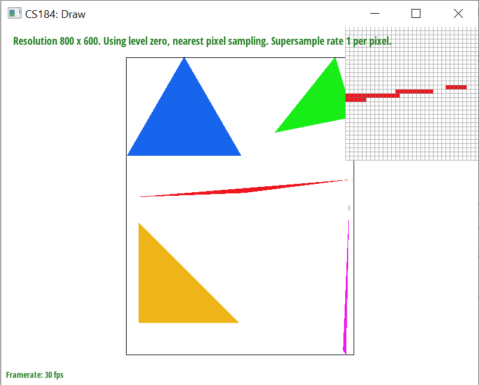

Overview
In this project, we implemented an image rasterizer that supports various different anti-aliasing techniques (supersampling, pixel sampling, and mipmap level sampling). This project really helped strengthen our understanding of the differences and tradeoffs between different anti-aliasing techniques.
Section I: Rasterization
Task 1: Rasterizing single-color triangles
For each pixel in the triangle's bounding box, we follow the procedure from lecture to determine if the pixel is inside the triangle (or on a triangle edge). For each pixel, perform a cross product for each triangle edge (so three cross products per pixel). Each cross product is computed into a value L, which indicates whether the pixel lies on, inside, or outside of the triangle edge. This cross product L is computed as follows:

Now we have no way to guaruntee that we are iterating over the triangle's three points in a certain orientation (either clockwise or counter-clockwise). Hence, a positive L value might indicate that the pixel is inside or outside the triangle edge. To account for this ambiguity, we can fill a pixel when either all three L computed values for that point are all together non-negative, or all together non-positive. If we discover that there are two conflicting L values (at least one positive and at least one negative L value), then we know that the point is not in the triangle. Additionally, if there is a L value that is exactly 0, then this means that the pixel lies on a triangle edge and we should trivially fill this pixel.
Our rasterization algorithm is no worse than one that checks each sample within the bounding box of the triangle because that's exactly what ours does. We restrict our iteration over pixels that are within the bounding box of the triangle (bounded by the minimum and maximum x and y values among the three triangle points).
Task 2: Antialiasing triangles
To implement supersampling, we modified the rasterizer to treat the image as a higher resolution image than it actually was. We subdivided each pixel in the framebuffer (size defined by 'width' and 'height'') such that there are exactly 'sample_rate' (which can be 1, 4, 9, or 16) subpixels to perfectly partition the framebuffer pixel. As such, we needed to scale all of the x, y, and width values used in the computations of the rasterizer by the square root of the sample rate to account for this higher resolution image.
The way that we decided to organize data in the sample buffer is to treat the higher resolution image as a matrix in row-matrix form, and then flatten it to a 1D array. Hence, not all subpixels corresponding to a particular pixel are adjacent to each other in the sample buffer (because they are on different rows). Then when it comes time to write a color value to the frame buffer, we average the color values from all the subpixels for that framebuffer pixel. When iterating over all subpixels for a framebuffer pixel we indexed into the sample buffer as follows:
This convoluted way of indexing was unfortunately necessary because of the way that we organized the data in the sample buffer.
After implementing supersampling for the triangle rasterizer, the points and lines in the images were not being rendered correctly. This is because we are now taking an average of subpixels when resolving to the frame buffer, but lines and points were still treating the image as if it is still in its original resolution when filling them in the sample buffer. So we simply fixed this by modifying fill_pixel() to fill all subpixels with the same color so that they look as they did before.
Supersampling is useful because it solves the jaggies problem since the averaging of subpixels effectively "smooths" high contrast/sharp images.
|

|

|
|
Task 3: Transforms
My robot is cheering while watching the super bowl (the TV is off screen). Yes, he is standing up because he has no couch in his house and is poor. It's okay though because as you can see money can't buy happiness, only the Chiefs' fourth quarter game winning touchdown can.
Section II: Sampling
Task 4: Barycentric coordinates
Barycentric coordinates are essentially a weighted sum of the triangle's three vertices. The weights for a given barycentric coordinate are based on that point's distance to each vertex. In addition, the three weights must sum to 1. This is extremly useful in texture mapping.
Task 5: "Pixel sampling" for texture mapping
Pixel sampling is the broad term referring to the method at which a rasterizer samples from a texture. For this project we implemented support for two pixel sampling methods: nearest pixel sampling and bilinear pixel sampling. Nearest sampling simply selects the color of the closest texel to the sample point when mapped to the texture. Bilinear sampling takes is a set nested of linear interpolations using the Colors from the four nearest texels as the lerp boundaries. First it linearly interpolates twice along one axis to use as two endpoints for a second linear interpolation along the other axis.
For our implementation, we found the uv coordinates (the sample point's coordinates mapped to the texture) by taking a weighted sum of the triangle's vertices' uv coordinates using the barycentric coordinates as the weights. Then when sampling we had to scale the uv coordinates by the texture's (width - 1) and (height - 1) because the uv values were between 0 and 1.
|
|

|
|
|
|
In the above comparisons, it's very easy to see that bilinear sampling "softens" the contrast in the high contrast areas at the top of the Campanile. Now obviously, changing the supersample rate by 16 has a greater affect on the image's smoothness than changing the sampling rate from nearest to bilinear just because of the magnitude of the sample rate change. However, not only is bilinear sampling more computationally cost effective, but it also still does a decent job of smoothing the image.
Task 6: "Level sampling" with mipmaps for texture mapping
Level sampling allows us to optimize texture mapping. We store a texture "pyramid" in a mipmap that allows us to store precomputed texture images at downscaled resolutions so that when we sample the texture we can save computations by sampling from lower resolution mipmap levels when possible. We implemented level sampling support for zero level sampling (always sample from the zero-th level in the mipmap), nearest level sampling (sample from the nearest appropriate mipmap level), and linear level sampling (sample from the two nearest appropriate mipmap levels and compute a weighted sum from these two samples). The raw mipmap level D (raw meaning can be a float) can be computed as follows:
For our implementation, we had to modify the rasterizer to compute the du/dx, dv/dx, du/y, and dv/dy values to pass to the level sampling method to compute the mipmap level. This was done exactly as described in the project spec with one catch. For the boundaries, it was possible that (x, y) is inside the triangle but either (x + 1, y) or (x, y + 1) is outside the triangle. To account for this, we subtracted one instead of adding one to the corresponding coordinate when necessary, so used (x - 1, y) or (x, y - 1) instead. This works because the difference vector is the exact same magnitude when flipping the sign, and since we are squaring these values only the magnitude of these vectors matter.
As for the implementation of the zero level sampling, it is pretty clear to see that you can just trivially pass in 0 as the level to the sampling methods as was done in task 5. For nearest level sampling, we rounded the raw computed D value to the nearest integer, and then clamped it to be within bounds of the mipmap's levels. Finally for the implementation of linear level sampling, we sampled from mipmap level floor(D) and mipmap level ceiling(D). Then using these two samples as the boundaries, we simply computed a linear interpolation as the resulting sample.
Taking into consideration of the three sampling techniques. Increasing the number of samples per pixel through supersampling yields the smoothest results; however it is the most computationally expensive. Increasing the quality of pixel sampling (i.e. nearest pixel sampling changed to bilinear pixel sampling) is a great "bang for your buck", as it increases the smoothness of the image while not being that much more computationally expensive. Finally, increasing the quality of level sampling is also great because it optimizes the speed of your samples greatly, but at the cost of the extra storage needed for the extra mipmap levels. However as demonstrated in lecture, not that much extra storage is needed, and it can be especially worth it for things like 3D video games.
Below are four images of a pokemon wallpaper with the pixel inspector zoomed in on Mega Gengar's forehead eye.
|
|
|
|
|
|